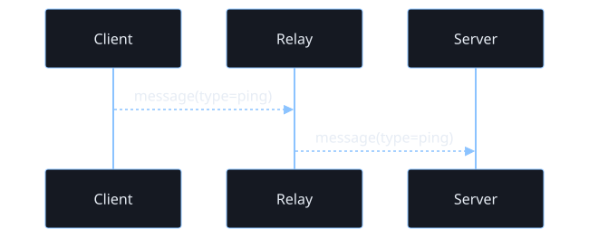
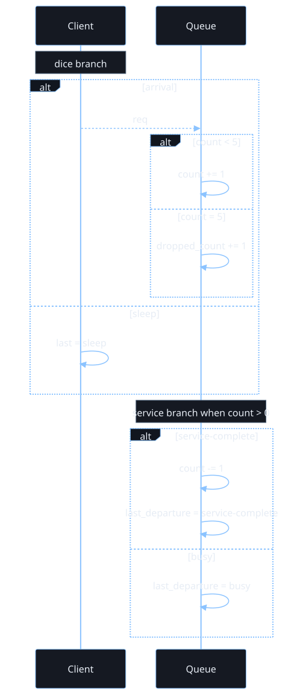

2026-03-22
This document records the current design intent for the actor IR, the declared control graph, the CTL checking model, the metric/event pipeline, and the documentation build. The target user is someone who can inspect diagrams and predicates, but does not want to learn a large formal language before getting value.
The central idea is:
The design goal is not to infer hidden control flow from simulation alone. Instead, transitions expose control flow through explicit become calls, and the compiler walks those action trees to recover possible successor control states.
This repository is for readers who want the benefits of temporal logic and executable models without first committing to a large bespoke specification language.
The intended workflow is:
The important constraint is inspectability. The user should be able to reject a bad model by reading the states, guards, transitions, predicates, and generated diagrams.
The document uses the following terms consistently:
becomeAn actor has:
Each actor owns its own state. Messages do not mutate the actor directly; they accumulate in the mailbox until the actor reaches a receive-ready transition.
A state is a named control location. For compiled models, the control location is explicit, not inferred from guard overlap.
A state contains transitions. A transition is selectable only if:
A transition contains:
Example:
(edge true
(recv msg)
(become got-ping))The compiler walks the action block, collects reachable become targets, and uses that successor set for graph construction and CTL. Runtime execution validates that the post-step control state is one of those derived successor states.
An edge must contain at least one become. Omitting become is a compile error; the language does not use implicit self-loops.
The compiler also walks the action block for communication operations. If send or recv appear later in the body, the compiler inserts internal wait substates such as wait__0, wait__1, and rewrites the edge into a chain of explicit control states where each communication step appears at the front of its compiled substate. That keeps the user-facing source compact while still giving the runtime and the proof layer a clean explicit control graph.
The central compromise in this repository is that transitions still expose successor control states structurally through become, rather than leaving control flow hidden in simulation traces.
That buys several things immediately:
It does not remove the need for correct modeling. A wrong become structure can still make the proof layer wrong. The point is that the control-flow obligation remains visible and reviewable.
The scheduler is single-threaded but concurrent in effect. At each step:
Dice value in [0,1]If the chosen actor has no ready transition, it yields. This is not deadlock. Deadlock means no actor in the whole runtime has any ready transition.
Each actor mailbox can be treated as a bounded or unbounded queue.
recv is ready if a matching message is presentsend is ready if the target mailbox has spaceA mailbox capacity of 0 means synchronous rendezvous semantics.
send is ready only if the receiver has a matching ready recvrecv is ready only if a sender is ready to rendezvousThe runtime currently models this by checking receiver readiness before a zero-capacity send is allowed to execute.
Before attempting a step, the runtime samples a floating-point value called Dice in [0,1].
That value can be used in guards to express random branching, for example:
(edge (dice-range 0.0 0.5 "route to branch a")
(become a))
(edge (dice-range 0.5 1.0 "route to branch b")
(become b))This is enough to express:
Full M/M/1/5-style example:
(model
(actor Client
(state loop
(edge (dice-range 0.0 0.5)
(set last "sleep")
(become loop))
(edge (dice-range 0.5 1.0)
(send Queue req)
(set last "arrival")
(become loop))))
(actor Queue
(state wait
(edge (and (mailbox req) (data= count 0))
(recv msg)
(add count 1)
(set elapsed 0)
(become wait))
(edge (and (mailbox req) (data> count 0) (not (data= count 5)))
(recv msg)
(add count 1)
(become wait))
(edge (and (mailbox req) (data= count 5))
(recv dropped)
(add dropped_count 1)
(become wait))
(edge (and (data> count 0) (dice-range 0.0 0.5))
(sub count 1)
(set last_departure "service-complete")
(become wait))
(edge (and (data> count 0) (dice-range 0.5 1.0))
(set last_departure "busy")
(become wait))))
(xyplot outstanding
(title "Outstanding Messages By Step")
(steps 100)
(metric sent-minus-received)))Interpretation:
Client models arrivals dice-range makes the sleep/arrival split explicitQueue models a single-server queue with capacity 5 count is the current system size and dropped_count records blocked arrivalscount > 0, dice-range decides whether service completes on that stepcount = 5 branch is the finite-capacity part arrivals are consumed and recorded as drops instead of increasing the queuebecome the example does not rely on implicit stay-in-place behaviorxyplot declaration says which runtime-derived chart should be rendered for this modelThis is not a continuous-time simulator. It is a small executable control model that captures the same queueing shape:
5That is usually enough for inspectable CTL properties such as:
Representative predicates for this queue model:
(ef (data> Queue count 0) "eventually the queue can become non-empty")(ef (data= Queue count 5) "the finite-capacity queue can saturate")(ef (data> Queue dropped_count 0) "some execution can observe blocked arrivals")(ag (implies (data= Queue count 0) (not (data> Queue dropped_count 0))) "drops only occur after the system has filled at some earlier point")The Mermaid artifacts below are a useful companion view for this example:
When the only source of branching is Dice, the operational picture is close to a Markov-chain style model.
When both of these are present:
Dice-driven branching inside actor guardsthe operational picture is closer to a decision process: some choices are external or controlled, and some are probabilistic.
That is the important mixed case for systems such as:
The current unit tests include both:
dice-rangeCommunication is part of transition readiness. There is no partial transition semantics.
That means:
recv is not ready, the transition is not enabledsend is not ready, the transition is not enabledThis makes an atomic transition a real scheduler unit.
The compiler normalizes communication-heavy bodies into explicit wait substates.
At the source level, the user can write local work and communication in one edge body. At the compiled level, the actor is split so that each send or recv sits at the front of a generated substate transition, with explicit become hops connecting the pieces.
Conceptually, something like this:
(edge true
(set before 1)
(send B ping)
(set after 1)
(become done))becomes an internal shape more like:
(edge true
(set before 1)
(become start__wait))
(state start__wait
(edge true
(send B ping)
(set after 1)
(become done)))That removes a lot of source-language noise while preserving explicit compiled control flow.
This repository treats a transition firing as a state change even when the actor remains in the same named control state. In other words:
The graph used by execution and model checking is therefore over full runtime states, while the derived control graph remains the human-facing skeleton.
The intended structured control tools are:
becomeifbecomeThis is closer to a small structured machine IR than to an arbitrary scripting language.
CTL needs an exact successor relation. In this design, the successor relation is derived from become calls in each transition body.
Runtime execution exists to validate that:
This means CTL does not need to wait for simulation to discover the control graph.
CTL is Computation Tree Logic.
The important idea is that execution does not produce one future. It produces a tree of possible futures:
CTL lets us ask whether a property holds on some future branch or on all future branches.
There are two dimensions in every temporal CTL operator:
E means “there exists a path” A means “for all paths”X means “in the next step” F means “eventually in the future” G means “globally, always in the future” U means “until”That is the core connection:
E corresponds to existential choice some reachable branch worksA corresponds to universal choice every reachable branch must workIn ordinary language:
EF p there exists some execution path on which p eventually becomes true “possibly, at some point, p happens”AF p on every execution path, p eventually becomes true “necessarily, sooner or later, p happens”EG p there exists some execution path on which p remains true forever “possibly, the system can stay in a p-good region forever”AG p on every execution path, p remains true forever “necessarily, p is always preserved”EX p there exists an immediate successor state where p holds “possibly on the next step”AX p for every immediate successor state, p holds “necessarily on the next step”E[p U q] there exists a path where p keeps holding until q eventually holdsA[p U q] on every path, p keeps holding until q eventually holdsThis is why the pairs matter:
EF vs AF possible eventuality vs guaranteed eventualityEG vs AG possible invariant along some branch vs invariant along all branchesEX vs AX one-step possibility vs one-step necessityEU vs AU possible progress condition vs guaranteed progress conditionExamples:
(ef (in-state Server accepted)) there is some way for the server to reach accepted(af (in-state Server accepted)) every possible future must eventually reach accepted(ag (not (mailbox-has Relay ping))) along all futures, the relay mailbox is always free of ping(eg (data> Queue count 0)) there exists some path where the queue can stay non-empty foreverEF is often the right operator for reachability or possibility. AF is stronger: it means no matter how scheduling and randomness resolve, the desired state is unavoidable. That difference is exactly why users need the quantifier explanation up front.
The modal mu-calculus is the lower-level fixpoint logic underneath this checker. CTL is now treated as a readable special case of that more general logic.
At first glance, the implementation of mu and nu can look almost suspiciously small. That is because the power comes from the combination of just three ideas:
The modal operators are:
diamond p there exists a successor state where p holds this is the same branching idea as CTL’s existential next-step operatorbox p for all successor states, p holds this is the universal next-step versionThe fixpoint operators are:
mu X body least fixpoint think “the smallest set of states that satisfies this recursive equation”nu X body greatest fixpoint think “the largest set of states that satisfies this recursive equation”Intuition:
mu is usually how you express eventuality, progress, or finite escapenu is usually how you express invariance, persistence, or the ability to remain inside a region foreverThat is the core mental model:
Reachability:
(mu X
(or (in-state Server accepted)
(diamond X)))Read it as:
accepted state or it can move in one step to another state that satisfies the same formulaThat is exactly “there exists a path that eventually reaches accepted”. So this is the mu-calculus form of EF.
Invariant preservation:
(nu X
(and (not (mailbox-has Relay ping))
(box X)))Read it as:
That is exactly “on all paths, always safe”. So this is the mu-calculus form of AG.
Possible persistence:
(nu X
(and (data> Queue count 0)
(diamond X)))Read it as:
That captures the idea that there is some execution branch along which the queue can remain non-empty forever. That is the mu-calculus form of EG.
The evaluator looks small because it is doing repeated set refinement on a finite graph.
For mu:
X means that current setFor nu:
X means that current setThat is enough to express a large amount of temporal reasoning because recursive temporal properties are exactly what fixpoints are good at.
For example:
The reason this is such a good foundation is that standard CTL operators translate directly into mu-calculus:
EX p becomes (diamond p)AX p becomes (box p)EF p becomes (mu X (or p (diamond X)))AF p becomes (mu X (or p (box X)))EG p becomes (nu X (and p (diamond X)))AG p becomes (nu X (and p (box X)))E[p U q] becomes (mu X (or q (and p (diamond X))))A[p U q] becomes (mu X (or q (and p (box X))))So CTL is not being replaced here. It becomes the user-facing fragment with the friendlier names, while the semantic engine underneath is the more general fixpoint logic.
It is reasonable to look at these formulas and think: “these are the kinds of things I usually use LTL for”.
That instinct is right in a practical sense. Many properties people ask for in system design sound like:
Those are the same kinds of temporal intuitions that lead people to LTL.
The important distinction is semantic:
In this repository, branching matters a lot:
So a branching-time logic is a better fit than plain linear-time reasoning.
The nice surprise is that the mu-calculus is expressive enough to capture many of the “eventually”, “always”, and “until” properties people informally think of as LTL-style requirements, while still speaking directly about the branching graph your runtime actually explores.
When reading a raw mu-calculus formula:
diamond means “some next branch”, box means “every next branch”mu usually means eventuality or progress nu usually means invariance or persistenceThat is all the checker is doing in code. It is simple enough to implement compactly, but general enough to cover a large part of practical temporal reasoning.
The implementation currently supports:
not, and, or, impliesex, axef, afeg, ageu, auRaw mu-calculus operators currently include:
true, falsenot, and, ordiamond, boxmu, nuin-state, data=, and mailbox-hasAtomic predicates currently include:
(in-state A done "actor A is in done")(data= A key value "actor A has the expected value")(mailbox-has A msg "actor A currently holds the message")Predicate forms may carry a final string argument used only as human-readable documentation. The evaluator ignores that trailing string semantically.
The algorithm in this repository is a standard finite-state CTL model-checking pattern over the explored runtime graph.
Step 1: build the reachable graph.
If a state has no enabled successors, the implementation records a self-loop labeled deadlock. That makes deadlock states explicit in the graph and keeps the temporal operators total.
Step 2: evaluate formulas by computing the set of satisfying states.
For each subformula, the checker computes:
Atomic predicates are evaluated directly on each runtime state. Boolean operators are evaluated by ordinary set operations:
not complementand intersectionor unionimplies not left or rightThe temporal operators are computed from the successor graph:
EX p mark any state with at least one successor already marked by pAX p mark any state whose successors are all marked by pEF p reduce to E[true U p]AF p reduce to A[true U p]AG p reduce to not EF not pEG p compute a greatest fixpoint: start from states satisfying p, then repeatedly remove any state that cannot stay inside that set on at least one successorEU(p, q) compute a least fixpoint: start from states satisfying q, then repeatedly add states satisfying p that can move to an already accepted stateAU(p, q) compute a least fixpoint: start from states satisfying q, then repeatedly add states satisfying p whose successors are all already acceptedSo the checker is not proving arbitrary mathematics. It is doing graph analysis on the explored transition system induced by the actor model.
That is exactly why this works well here:
At the current stage, CTL is proving properties over the repository’s induced model, not solving theorem-proving problems over arbitrary infinite mathematics.
That means:
become successor relation is wrong, the result is only as good as that modelThis is still useful. The tool is intended to make control flow, messaging, and temporal requirements inspectable enough that a human can review the generated model rather than trusting a hidden formalization.
Transitions, sends, and receives are recorded as structured runtime events. This is the base layer for line graphs and performance-style metrics.
At the current stage, the runtime can already derive:
This is the beginning of the metrics side of the tool. The goal is that message rates, queue growth, latency, throughput, and retry behavior should come from the event log rather than from ad hoc parsing of trace strings.
The language needs protocol-oriented built-ins so examples like authentication and key exchange do not require embedding large arithmetic sublanguages.
Current built-ins:
(md5 out source)
out(rsa-raw out modulus exponent message)
out(cryptorandom out bytes)
out(sample-exponential out rate)
outPure value-level helpers:
(cons a b)
a to b(car xs)
(cdr xs)
(def name (params...) body)
set and sendThese are intentionally low-level. They are not safe protocol APIs. They are protocol-modeling primitives.
Planned built-ins:
The current crypto built-ins are intentionally raw. The purpose of the built-ins is not to provide production-safe cryptographic APIs. The purpose is to let protocol examples express byte-level and arithmetic-level steps without bloating the core language.
The long-term direction is to support examples such as:
The IR is sensible if the following remain true:
becomeThis gives a coherent story for:
This project is not trying to replicate TLA+, CSP, PRISM, or Erlang exactly.
Instead, it borrows selected strengths:
The value is in the combination: a readable actor/message IR that an LLM can draft and a human can still audit.
The intended future workflow is:
This allows:
The current repository is intentionally small. The most important files are:
main.go the reader, runtime, CTL implementation, event log, and serialization codemain_test.go executable examples that pin down the semanticsdocs/ir.md this documentdocs/mermaid/ Mermaid sources rendered into SVG for publicationdocs/generated/ generated diagrams and plotsscripts/ helper scripts used by the documentation pipelineThe tests are not secondary. They are the clearest executable specification currently in the repository.
The document example should not be a single actor in isolation. The intended workflow is to describe a set of interacting actors, generate diagrams from that same input, and check temporal requirements over the same derived control graph.
This small message-chain example is intentionally simple, but it already exercises:
become(model
(actor Client
(state loop
(edge true
(send Relay '(message (type ping)))
(become loop))))
(actor Relay
(state relay
(edge true
(recv msg)
(send Server msg)
(become relay))))
(actor Server
(state idle
(edge true
(recv received)
(become idle))))
(assert (ef (data= Server received '(message (type ping)) "possibly server records the ping message")))
(assert (af (data= Server received '(message (type ping)) "eventually server records the ping message")))
(assert (ag (not (mailbox-has Relay '(message (type ping)) "relay still holds ping")) "always relay mailbox is empty of ping"))
(xyplot message_outstanding
(title "Message Chain Outstanding Messages")
(steps 24)
(metric sent-minus-received))
(xyplot message_sends
(title "Message Chain Sends By Step")
(steps 24)
(metric send-count))
(xyplot message_receives
(title "Message Chain Receives By Step")
(steps 24)
(metric receive-count)))The first two embedded assertions are intended to hold for the example model.
The third is intentionally useful as a negative example: it should fail at the initial state because there is a reachable moment where Relay is holding a ping message before it forwards it.
The operational intent is:
type is pingrecv has no message available, that edge is simply not readyThe example should be read as a top-level model containing three small control machines plus CTL assertions that are checked against the explored graph.
Client
loopping-typed message to Relayloop againRelay
relayServer, and becomes relay againrecv or sendServer
idleidle againThis example is deliberately small, but it is enough to show:
becomeBecause transitions, sends, and receives are now logged as structured events, the docs can render plots from an actual Runtime execution instead of from hand-written points.
One such plot is declared in the model itself with:
(xyplot queue_outstanding
(title "Outstanding Messages By Step")
(steps 100)
(metric sent-minus-received))The line charts below are rendered from every xyplot declaration in the example models. The queue plot is a 100-step run of the M/M/1/5-style queue example above. It starts at 0, and the sent-minus-received line is positive exactly when sends are ahead of receives. It does not force the run to end at 0, because this queue model can still have accepted work in service even after mailbox traffic has balanced out.
message_outstanding
(xyplot message_outstanding
(title "Message Chain Outstanding Messages")
(steps 24)
(metric sent-minus-received))

message_receives
(xyplot message_receives
(title "Message Chain Receives By Step")
(steps 24)
(metric receive-count))

message_sends
(xyplot message_sends
(title "Message Chain Sends By Step")
(steps 24)
(metric send-count))

queue_outstanding
(xyplot queue_outstanding
(title "Outstanding Messages By Step")
(steps 100)
(metric sent-minus-received))
Natural follow-on plots include:
The build expects Mermaid sources under docs/mermaid/ and renders SVGs into docs/generated/.
Example includes:

a_to_b_sequence.mmd
sequenceDiagram
participant Client
participant Relay
participant Server
Client-->>Relay: message(type=ping)
Relay-->>Server: message(type=ping)

a_to_b_state.mmd
flowchart TD
subgraph Client
direction TB
C_loop([loop]) -->|"sent = ping"| C_loop
end
subgraph Relay
direction TB
subgraph R_relay["relay"]
direction TB
R_wait([wait])
end
R_entry(( ))
R_entry -->|"recv msg"| R_wait
R_wait -->|"send msg"| R_entry
end
subgraph Server
direction TB
S_idle([idle]) -->|"received = ping"| S_idle
end
C_loop -. send ping .-> R_relay
R_wait -. send ping .-> S_idle

mm1_5_queue_flow.mmd
sequenceDiagram
participant Client
participant Queue
Note over Client: dice branch
alt arrival
Client-->>Queue: req
alt count < 5
Queue->>Queue: count += 1
else count = 5
Queue->>Queue: dropped_count += 1
end
else sleep
Client->>Client: last = sleep
end
Note over Queue: service branch when count > 0
alt service-complete
Queue->>Queue: count -= 1
Queue->>Queue: last_departure = service-complete
else busy
Queue->>Queue: last_departure = busy
end

mm1_5_queue_state.mmd
flowchart TD
subgraph Client
direction TB
C_loop([loop]) -->|"dice<0.5<br/>last = sleep"| C_loop
C_loop -->|"dice>=0.5<br/>send req<br/>last = arrival"| C_loop
end
subgraph Queue
direction TB
Q_wait([wait]) -->|"req and count = 0<br/>count += 1<br/>elapsed = 0"| Q_wait
Q_wait -->|"req and 0 < count < 5<br/>count += 1"| Q_wait
Q_wait -->|"req and count = 5<br/>dropped_count += 1"| Q_wait
Q_wait -->|"count > 0 and dice<0.5<br/>count -= 1<br/>last_departure = service-complete"| Q_wait
Q_wait -->|"count > 0 and dice>=0.5<br/>last_departure = busy"| Q_wait
end
C_loop -. arrival req .-> Q_wait
The important constraint is that the diagrams are not decorative extras. They are another view over the same declared control structure.
The Makefile provides:
make testmake docsmake diagramsmake serve-docsmake cleanCurrent assumptions:
pandoc is installed for document generationmmdc is installed for Mermaid-to-SVG generationThe document and Mermaid build are intentionally kept separate so the same generated Mermaid source can be inspected directly.
After running make docs, the generated document lives at:
docs/build/ir.htmlFor local review, the repository also provides a simple static server target:
make serve-docsThat serves docs/build/ over a local HTTP server so the generated HTML, SVG diagrams, and plots can be reviewed together in a browser.
This repository is still a skeleton. Important things are intentionally incomplete:
That is acceptable for this stage. The repository is already good enough to show the core thesis: